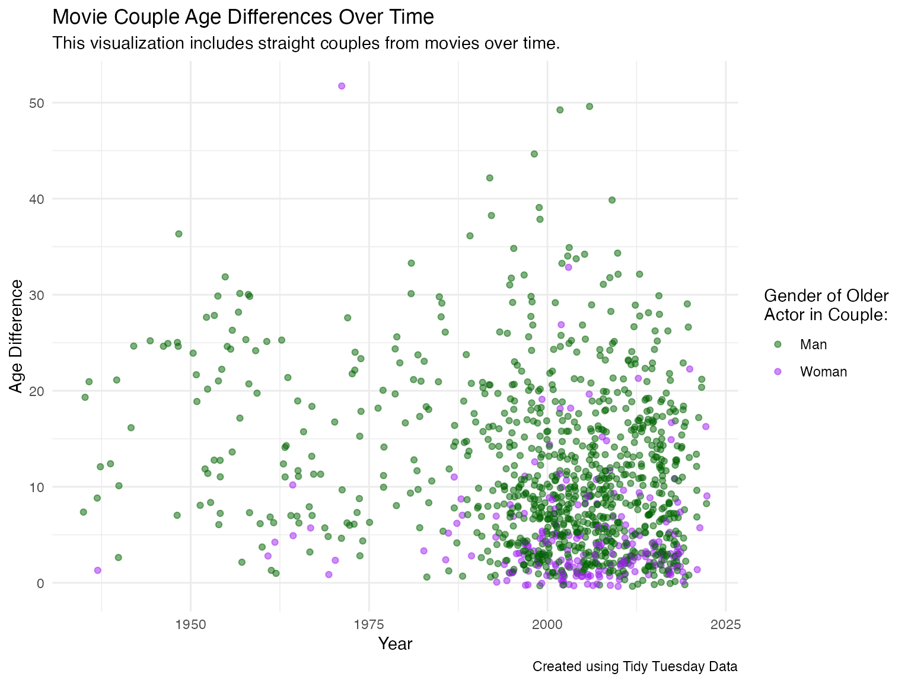
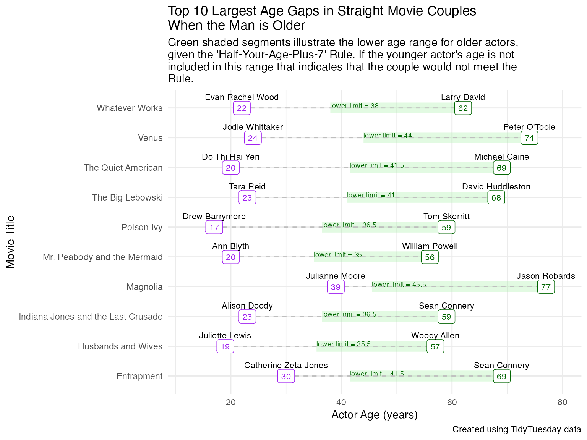

Saving the Data
download_and_save <- function(file_name, url) {
data_folder <- "../data"
file_path <- file.path("../data", file_name)
# See if the file already exists
if (!file.exists("../data")) {
dir.create("../data", recursive = TRUE)
}
if (!file.exists(file_path)) {
# Download the data if it does not exist
data <- readr::read_csv(url)
# Saves the data to the path with the desired name
write.csv(data, file = file_path, row.names = FALSE)
}
}
# Uses download_and_save function with age_gaps.csv from GitHub
download_and_save("age_gaps.csv", 'https://raw.githubusercontent.com/rfordatascience/tidytuesday/master/data/2023/2023-02-14/age_gaps.csv')Loading Dataset
# Imports raw age_gap dataset
age_gaps_raw <- read_csv("../data/age_gaps.csv")
#> Rows: 1155 Columns: 13
#> ── Column specification ────────────────────────────────────────────────────────
#> Delimiter: ","
#> chr (6): movie_name, director, actor_1_name, actor_2_name, character_1_gend...
#> dbl (5): release_year, age_difference, couple_number, actor_1_age, actor_2_age
#> date (2): actor_1_birthdate, actor_2_birthdate
#>
#> ℹ Use `spec()` to retrieve the full column specification for this data.
#> ℹ Specify the column types or set `show_col_types = FALSE` to quiet this message.Cleaning Dataset
age_gaps_v1 <- age_gaps_raw %>%
# creates new variable to describe sexual orientation of couple
mutate(orientation = ifelse(character_1_gender == "man" & character_2_gender == "man" |
character_1_gender == "woman" & character_2_gender == "woman",
"LGBTQ",
"Straight"),
# modifies birthdate variables to be treated as dates
actor_1_birthdate = ymd(actor_1_birthdate),
actor_2_birthdate = ymd(actor_2_birthdate))
calculate_older_actor <- function(man_birthdate, woman_birthdate) {
if (man_birthdate < woman_birthdate) {
return("man")
} else if (woman_birthdate < man_birthdate) {
return("woman")
} else {
return("same birthdate")
}
}
assign_gender_details <- function(character_1_gender, character_2_gender, actor_1_age, actor_1_birthdate, actor_1_name, actor_2_age, actor_2_birthdate, actor_2_name) {
details <- list()
if (character_1_gender == "man") {
details$man_age <- actor_1_age
details$man_birthdate <- ymd(actor_1_birthdate)
details$man_name <- actor_1_name
} else {
details$man_age <- actor_2_age
details$man_birthdate <- ymd(actor_2_birthdate)
details$man_name <- actor_2_name
}
if (character_2_gender == "woman") {
details$woman_age <- actor_2_age
details$woman_birthdate <- actor_2_birthdate
details$woman_name <- actor_2_name
} else {
details$woman_age <- actor_1_age
details$woman_birthdate <- actor_1_birthdate
details$woman_name <- actor_1_name
}
return(details)
}
age_gaps_straight <- age_gaps_v1 %>%
mutate(
details = pmap(list(character_1_gender, character_2_gender, actor_1_age, actor_1_birthdate, actor_1_name, actor_2_age, actor_2_birthdate, actor_2_name), assign_gender_details)
) %>%
# Unpack the details
mutate(
man_age = map_dbl(details, "man_age"),
man_birthdate = map(details, "man_birthdate") %>% map_chr(as.character) %>% ymd(),
man_name = map_chr(details, "man_name"),
woman_age = map_dbl(details, "woman_age"),
woman_birthdate = map(details, "woman_birthdate") %>% map_chr(as.character) %>% ymd(),
woman_name = map_chr(details, "woman_name"),
older_actor = pmap_chr(list(man_birthdate, woman_birthdate), calculate_older_actor)
) %>%
select(-details)Visualizing Age Gaps over Time
ggplot(age_gaps_straight, aes(x = release_year, y = age_difference, color = older_actor)) +
# adds jitter for discrete data
geom_jitter(alpha = 0.5) +
# designates color of points by gender of older actor in couple
scale_color_manual(values = c("man" = "darkgreen", "woman" = "purple"),
labels = c("Man", "Woman")) +
# creates labels for plot
labs(
title = "Movie Couple Age Differences Over Time",
x = "Year",
y = "Age Difference",
color = "Gender of Older \nActor in Couple:"
) +
theme_minimal()
Age Comparison of Men and Women in Movie Couples
Please note that this plot includes a demonstration of the check_couple function.
age_gaps_straight %>%
# demonstrates check_couple function from halfplus7 package
mutate(match_rule = case_when(
check_couple(man_age, woman_age) == FALSE ~ "No",
check_couple(man_age, woman_age) == TRUE ~ "Yes")) %>%
ggplot(aes(man_age, woman_age, color = match_rule)) +
# adds jitter for discrete data
geom_jitter(alpha = 0.5) +
# adds line at y = x to illustrate couples with the same age
geom_abline(intercept = 0, slope = 1, linetype = "dashed", color = "black") +
# designates colors to identify whether couple meets 'Half-Your-Age-Plus-7' Rule
scale_color_manual(values = c("Yes" = "blue", "No" = "red")) +
theme_minimal() +
# adds labels for plot
labs(
title = "Age Comparison of Woman and Man in Straight Movie Couples",
subtitle = "Observations that fall on the black dashed line indicate the same age for the man and woman.",
x = "Man's Age",
y = "Woman's Age",
color = "Does the Couple follow the \n'Half-Your-Age-Plus-Seven' Rule?"
) +
# moves legend to top of plot
theme(legend.position = "top")
Creates Datasets for the Straight Couples with the largest age gaps
# creates data set with couples with largest age gaps, 10 with older man and 10 with older woman
top_age_gaps <- age_gaps_straight %>%
arrange(desc(age_difference)) %>%
group_by(older_actor) %>%
slice_head(n = 10)
# modifies dataset above
top_age_gaps_long <- top_age_gaps %>%
uncount(weight = 1) %>%
pivot_longer(cols = c(man_age, woman_age),
names_to = "actor",
values_to = "age") %>%
mutate(actor_name = ifelse(actor == "man_age", man_name, woman_name),
age_lowerlim = lower_limit(age),
age_upperlim = upper_limit(age))Top 10 Largest Age Gaps when Man is Older
top_age_gaps_long %>%
filter(older_actor == "man") %>%
ggplot(aes(x = age, y = reorder(movie_name, age_difference))) +
geom_segment(aes(x = age, xend = ifelse(actor == "man_age", age_lowerlim, age),
y = movie_name, yend = movie_name),
color = "lightgreen", alpha = 0.25, linetype = "solid", size = 5) +
geom_text(data = . %>% filter(actor == "man_age"),
aes(label = paste("lower limit =", age_lowerlim), x = age_lowerlim, y = movie_name),
vjust = 0, hjust = 0, size = 2.5, color = "darkgreen") +
geom_segment(aes(x = age, xend = ifelse(actor == "woman_age", age + age_difference, age),
y = movie_name, yend = movie_name),
color = "gray", linetype = "dashed", linewidth = 0.5) +
geom_label(aes(label = age, color = actor), show.legend = FALSE,
fill = "white", size = 3, hjust = 0.5, vjust = 0.5) +
geom_text(aes(label = actor_name, y = movie_name),
vjust = -1.3, hjust = 0.5, size = 3) +
labs(title = "Top 10 Largest Age Gaps in Straight Movie Couples \nWhen the Man is Older",
subtitle = "Green shaded segments illustrate the lower age range for older actors, \ngiven the 'Half-Your-Age-Plus-7' Rule. If the younger actor's age is not \nincluded in this range that indicates that the couple would not meet the \nRule.",
x = "Actor Age (years)",
y = "Movie Title",
color = "Gender:",
caption = "Created using TidyTuesday data") +
scale_color_manual(values = c("man_age" = "darkgreen", "woman_age" = "purple"),
labels = c("Man", "Woman")) +
theme_minimal() +
theme(legend.position = "top") +
xlim(c(12, 80))
#> Warning: Using `size` aesthetic for lines was deprecated in ggplot2 3.4.0.
#> ℹ Please use `linewidth` instead.
#> This warning is displayed once every 8 hours.
#> Call `lifecycle::last_lifecycle_warnings()` to see where this warning was
#> generated.
Top 10 Largest Age Gaps when Woman is Older
top_age_gaps_long %>%
filter(older_actor == "woman") %>%
ggplot(aes(x = age, y = reorder(interaction(movie_name, age_difference), age_difference))) +
geom_segment(aes(x = age, xend = ifelse(actor == "man_age", age_upperlim, age),
y = reorder(interaction(movie_name, age_difference), age_difference), yend = reorder(interaction(movie_name, age_difference), age_difference)),
color = "lightgreen", alpha = 0.25, linetype = "solid", size = 5) +
geom_text(data = . %>% filter(actor == "man_age"),
aes(label = paste("upper limit =", age_upperlim), x = age + 2, y = reorder(interaction(movie_name, age_difference), age_difference)),
vjust = 0, hjust = 0, size = 2.5, color = "darkgreen") +
geom_segment(aes(x = age, xend = ifelse(actor == "man_age", age + age_difference, age),
y = interaction(movie_name, age_difference), yend = interaction(movie_name, age_difference)),
color = "gray", linetype = "dashed", linewidth = 0.5) +
geom_label(aes(label = age, color = actor), show.legend = FALSE,
fill = "white", size = 3, hjust = 0.5, vjust = 0.5) +
geom_text(aes(label = actor_name, y = interaction(movie_name, age_difference)),
vjust = -1.3, hjust = 0.5, size = 3) +
labs(title = "Top 10 Largest Age Gaps in Straight Movie Couples \nWhen the Woman is Older",
subtitle = "Green shaded segments illustrate the upper age range for younger actors, \ngiven the 'Half-Your-Age-Plus-7' Rule. If the younger actor's age is not \nincluded in this range that indicates that the couple would not meet the \nRule.",
x = "Actor Age (years)",
x = "Actor Age (years)",
y = "Movie Title",
caption = "Created using TidyTuesday data") +
scale_color_manual(values = c("man_age" = "darkgreen", "woman_age" = "purple"),
labels = c("Man", "Woman")) +
theme_minimal() +
theme(legend.position = "top") +
guides(color = guide_legend(title = "Gender:")) +
xlim(c(12, 85))